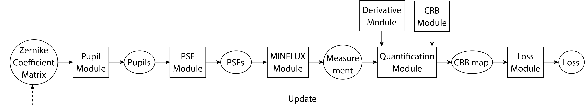
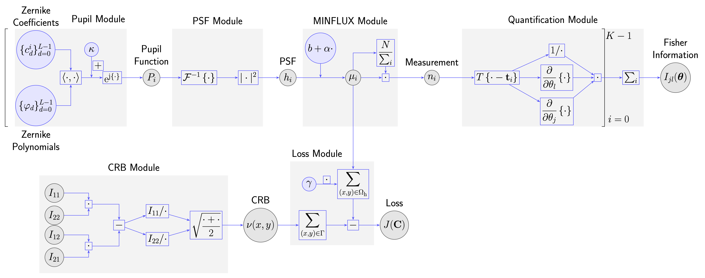
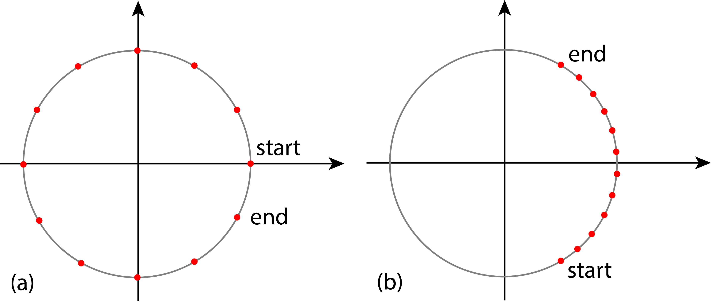
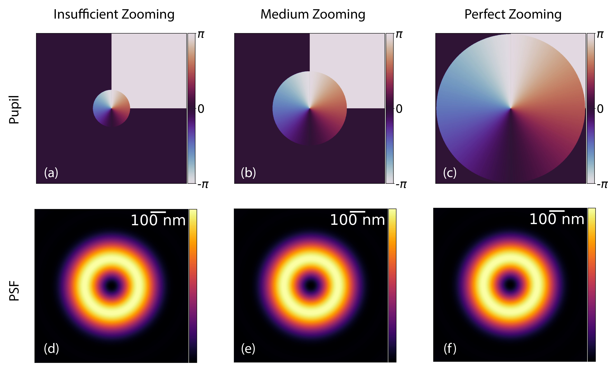

Implementation¶
In this section, we present the implementation of the optimization pipeline, including
the architecture of the forward model,
the optimization algorithm, and
technical details on the computation of the partial derivatives and the generalized inverse Fourier transform.
Overview of the Pipeline¶
The forward model described in the previous section follows a linear structure, and we implement it as a pipeline composed of seven modules (see Fig. 43 for an overview and Fig. 44 for details).

Fig. 43 MINFLUX optimization pipeline. Solid and dashed lines with arrowheads indicate the forward and inverse processes, respectively. The quantities in the ellipses correspond to the inputs and outputs of the modules (rectangles).¶


Fig. 44 Flowchart of the detailed structure of the optimization pipeline.¶
The five core modules (Pupil, PSF, MINFLUX, Quantification, and Loss) are executed sequentially, with the output of one as the input for the next. The two auxiliary modules, Derivative and CRB, support Quantification. A detailed flowchart of these modules is provided in the Fig. 44.
Optimization Algorithm¶
We deploy a gradient-based minimization algorithm in Algorithm 5 to solve Eq. (123) . We employ Adam, a stochastic gradient descent algorithm for solving inverse problems [85]. Due to the complexity of the forward model (a sequence of common operations but overall nonlinear, as shown in Fig. 44), it is impractical to derive and implement an explicit expression of the gradient \(\frac{\mathrm{d}J}{\mathrm{d}\mathbf{C}}\) of the loss function. We thus use PyTorch and leverage its automatic differentiation functionality to obtain the gradient, which has been introduced in section Computational Aspects in chapter Modeling and Solving of Inverse Problems. The coefficient matrix \(\mathbf{C}^{N_{\textrm{iter}}}\) of the final iteration is used to generate the final optimized pupil, the PSF and the corresponding CRB map.
Algorithm 5 (MINFLUX Optimization)
Input: Initial guess of the Zernike coefficient matrix \(\mathbf{C}^0\), stopping threshold \(\epsilon=10^{-6}\), and maximal number of iterations \(N_{\max}\)
\(N_{\textrm{iter}} = 0\)
Calculate the loss \(J(\mathbf{C}^{N_{\textrm{iter}}})\) in Eq. (123)
Calculate the gradient \(\frac{\mathrm{d}J}{\mathrm{d}\mathbf{C}} (\mathbf{C}^{N_{\textrm{iter}}})\) using \(J.\textrm{backward()}\)
Apply a gradient-descent step via \(Adam(lr=0.05, betas=(0.9, 0.999))\)
If (\(N_{\textrm{iter}} > 0\) and \(|J(\mathbf{C}^{N_{\mathrm{iter}}}) - J(\mathbf{C}^{N_{\textrm{iter} - 1}})| \leq \epsilon\)) or (\( N_{\textrm{iter}} > N_{\max})\):
Terminate.
\(N_{\textrm{iter}}\leftarrow N_{\textrm{iter}} + 1\)
Our pipeline has a practical multiresolution feature. The input of the pipeline, the Zernike coefficient matrix, does not depend on the size of the pupil or the PSF. This allows us to accelerate optimization on a coarse scale and then produce high-resolution images afterward. For example, we used a numerical size of \((256\times256)\) px and \((512\times512)\) px for the pupil and PSF, respectively, during optimization, which enables us to finish in a reasonable amount of time (see Fig. 52) while ensuring sufficient sampling of the pupil function and the CRB map. After optimization, we perform an extra round of the forward pipeline using the optimized coefficients to yield images of size \((2048\times2048)\) px.
Technical Notes¶
In this section, we explain the solutions to two computational challenges in the pipeline:
a precise formula of the partial derivatives involved in the Quantification Module (see Fig. 44 and Eq. (119)), and
a fast and efficient technique to compute the inverse Fourier transforms that are required in the PSF Module.
Explicit Expression of the Partial Derivatives in the Fisher Information Matrix¶
In Statistical Detection Limit via the Cramér-Rao Lower Bound, we have seen that the partial derivative \(\frac{\partial \mu_i(\boldsymbol{\theta})}{\partial \theta}\) (equivalently \(\frac{\partial h_i(\boldsymbol{\theta})}{\partial \theta}\) because of Eq. (110)) is needed to compute the Fisher matrix Eq. (119). We show that an explicit expression of \(\frac{\partial h_i(\boldsymbol{\theta})}{\partial \theta}\) exists, which enables an exact implementation of the forward model.
For notational convenience, we denote the inverse Fourier transform \(g(x, y):\mathbb{R}^2\to\mathbb{C}\) of the pupil function \(P(k_\text{x}, k_\text{y})\) as
As \(h(x, y)\) is defined as the square modulus of \(g\), it can be equivalently written as the element-wise multiplication of \(g\) with its complex conjugate \(g^*\)
Without loss of generality, we derive the partial derivative of \(h_i\) with respect to \(x\) at location \((x - t_\text{x}, y - t_\text{y})\) and write that
The last equality in Eq. (127) is because \((\frac{\partial g}{\partial x}\cdot g^*)\) and \((\frac{\partial g^*}{\partial x}\cdot g)\) are complex conjugate pairs. Due to the shift property of the Fourier transform, we have that
Combining the differentiation and shift property of the Fourier transform, we have that
Combining Eq. (129) and Eq. (128) together with Eq. (127), we write the explicit expression for \(\frac{\partial h}{\partial x}(x - t_\text{x}, y - t_\text{y})\) as
Similarly, the derivative \(\frac{\partial h}{\partial y}(x - t_\text{x}, y - t_\text{y})\) of \(h\) with respect to \(y\) at location \((x - t_\text{x}, y - t_\text{y})\) is
Efficient Computation of the Generalized Inverse Fourier Transform¶
We see from Eq. (108), Eq. (130), and Eq. (131) that the inverse Fourier transform (IFT) is frequently required to compute the beam-propagation model and the partial derivatives in the Fisher information matrix. While the standard inverse discrete Fourier transform (IDFT) algorithm is a common choice, it is not suitable for our specific task. To produce a high-resolution PSF image, one needs to pad many zeros, which is computationally inefficient. Besides, IDFT can only handle the case where the size of the input and output (e.g. the pupil and the PSF) is the same. In this section, we address these challenges via the chirp Z-transform (CZT) and provide an efficient algorithm to compute the generalized inverse Fourier transform. It is of the same complexity as FFT and allows us to zoom in onto the object plane to refine the PSF function without zero-padding. This approach is applicable to other beam propagation models based on Fourier transforms (see next section A Unifying Framework for the Computation of Point Spread Functions for details).
The chirp Z-transform of a discrete 1D signal \(x_n\) of length \(N\) is defined as
where \(y_m\) is the \(m\)th sample of the output signal of length \(M\), with \(M\) being not necessarily equal to \(N\). We observe that IDFT is a special case of Eq. (132) with \(a=1\), \(w=\mathrm{e}^{\frac{\mathrm{j}}{N}}\), and a scaling factor of \(\frac{1}{N}\). Graphically, the sampling of \(y_m\) starts from \((1, 0)\) and covers the whole unit circle with a constant angular step size of \(\frac{2\pi}{N}\) on the complex plane, see Fig. 45 (a).


Fig. 45 Sampling of \(N\) points on the unit circle. (a) IDFT samples uniformly the whole unit circle. (b) zoomIDFT performs a uniform sampling of a subset of the unit circle.¶
We define a special IDFT, termed zoomIDFT
where \(z\in(0, 1]\) is a zoom factor such that only \(z\)-percent of the full unit circle is sampled. Further, the origin of both the input and output signals is centered instead of at the beginning as indicated by \((n - \frac{N}{2})\) and \((k-\frac{M}{2})\), see Fig. 45 (b).
Given the desired number of sampling points for both the Fourier and object planes, zoomIDFT allows us to control the area on which the pupil occupies via a constant — the zooming factor \(z\). Ideally, \(z\) is chosen such that the pupil fully occupies the whole plane for maximal numerical efficiency (see (Fig. 46)).

Fig. 46 Impact of the zooming factor. First row: Pupil functions with an insufficient (a) zooming factor of 0.00875, medium (b) factor of 0.004375, and perfect (c) zooming of 0.0021875. Second row: Corresponding PSFs. The numerical sizes of the pupils and PSFs are \((1028\times1028)\) px and \((2048\times2048)\) px, respectively.¶
To efficiently compute Eq. (133), we follow the techniques proposed in [201, 202, 203] and rewrite Eq. (132) as the convolution
using the relation \(nm = (n^2 + m^2 - (m-n)^2) / 2\) [201] to separate the variables \(n\) and \(m\). Eq. (134) is then efficiently computed using two precomputed FFTs and one IFFT. We thus shuffle the order of the terms of zoomIFFT in Eq. (133) to obtain that
where \(a = \mathrm{e}^{\mathrm{j} z\frac{M}{N}}\), \(w=\mathrm{e}^{\frac{\mathrm{j}}{N}z}\). Then, we use Eq. (134) to compute the CZT contained in Eq. (135).